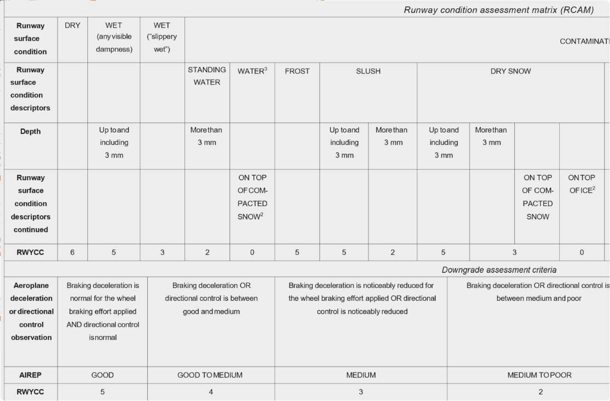

When contaminants are present, the aerodrome operator (ADR.OPS.B.037) inspects the runway, assigns a RWYCC per third with the RCAM, and uses AIREPs to trigger a reassessment. The number of inspections is not fixed: as many as necessary.
Structure of the matrix
Assessment criteria (at the inspection): runway surface description — contaminant type, depth, outside air temperature → RWYCC 6 to 0.
Downgrade assessment criteria: aeroplane deceleration or directional control observation, and the pilot report of braking action (AIREP).
Runway Condition Assessment Matrix — French version used in the course. Source: RCAM (company GRF documentation).
The codes
RWYCC
Runway surface description
AIREP
6
DRY
—
5
FROST · WET (≤ 3 mm) · up to 3 mm: SLUSH, DRY SNOW, WET SNOW
GOOD
4
COMPACTED SNOW at −15 °C OAT or colder (also specially prepared winter runway)
GOOD TO MEDIUM
3
SLIPPERY WET · DRY or WET SNOW on top of COMPACTED SNOW · more than 3 mm: DRY SNOW, WET SNOW · COMPACTED SNOW above −15 °C
MEDIUM
2
More than 3 mm of STANDING WATER or SLUSH
MEDIUM TO POOR
1
ICE
POOR
0
WET ICE · WATER on top of COMPACTED SNOW · DRY or WET SNOW on top of ICE
LESS THAN POOR
Reading examples
Find the code in the matrix, then tap to check.
RCAM versions
Vertical or horizontal presentation, with or without snow and ice conditions. A simplified matrix exists for aerodromes never exposed to snow or ice.
The matrix chosen must be integrated into the local procedures of the aerodrome operator.
No RCAM refers to friction coefficient measurements; non-meteorological contaminants (sand, oil, rubber…) are not in the matrix.

Horizontal presentation of the RCAM (EASA). Source: EASA AMC1 ADR.OPS.B.037, from the company GRF course.
RCAM versions (2)
Simplified RCAM for aerodromes never exposed to snow or ice. Source: RCAM (company GRF documentation).